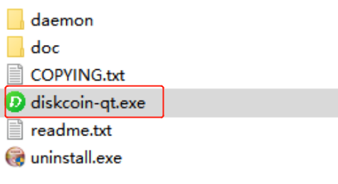

Plotter ID¶
请通过以下链接: https://diskcoin.org/PidGenerator/index.html#btnGroup, 检查PID是否适用Diskcoin挖矿.如果适用,矿工无需重新P盘.如果不适合,则需要通过上述链接生成新的PID,重新P盘才能挖Diskcoin.由Diskcoin PID生成器生成的PID可以挖其它PoC币种.
P盘软件¶
ENGRAVER
制造商:PoC-Consortium
下载链接: https://github.com/PoC-Consortium/engraver
适用系统: Linux, MacOS
安装指引: Compile from Source
TurboPlotter 9000
制造商: Blackpawn
下载链接: https://blackpawn.com/tp/
适用系统: Windows, Linux, MacOS
XPlotterGui
制造商: JohnnyFFM
下载链接: https://github.com/JohnnyFFM/XPlotterGui/releases/latest
适用系统: Windows
XPlotter modded
制造商: JohnnyFFM
下载链接: https://github.com/JohnnyFFM/XPlotter/releases/latest
适用系统: Windows
挖矿¶
挖矿准备¶
挖矿设备: 一个组装好并且p好盘的硬盘挖矿设备(硬盘容量越大,收益越高).
钱包支持系统: Linux/Windows/MacOS.
挖矿支持系统: Windows系统.
挖矿软件: dcminer或ddProxy
安装Diskcoin钱包¶
-
钱包下载 打开钱包下载地址: https://github.com/diskcoin-apps-team/wiki/releases 根据个人电脑系统选择适配的钱包下载,如下图:

-
钱包配置
Windows钱包配置 将钱包下载到Windows的电脑,并解压.如果之前安装过钱包,不能正常同步数据.请先删除之前的数据再安装.
调试文件 文件"diskcoin.conf"默认不需要修改,除非端口已经被占据.
运行钱包 Window系统连接到Solo挖矿需要配置钱包. (1)首先进入到钱包的安装目录,安装目录下面有一个diskcoin-qt.exe文件,如下图所示: 
(2)同时按下"Windows徽标键"和"R",在搜索框输入"cmd",如下图所示:

(3)点击"确定"后进入windows的控制台界面.将步骤1上面的diskcoin-qt.exe按住拖到控制台界面,如下图所示:

(4)然后在控制台界面输入以下命令后,按Enter键,如下图所示:
空格 -rpcallowip=127.0.0.1/32 -rpcbind=127.0.0.1

MacOS钱包配置 MacOS系统与Windows系统同理,但执行命令不同.
MacOS的执行命令:
Applications/Diskcoin-Qt.app/Contents/MacOS/Diskcoin-Qt -rpcallowip=127.0.0.1/32 -rpcbind=127.0.0.1
Linux系统钱包配置 请下载适合Linux系统版本的钱包,将其复制粘贴到Linux系统并解压.
调试文件 文件"diskcoin.conf"默认不需要修改,除非端口已经被占据. cd diskcoin
运行diskcoind服务
./diskcoind -rpcbind=127.0.0.1 -rpcallowip="127.0.0.1/32"
等待钱包同步节点数据
./diskcoin-cli getinfo View current block height ./diskcoin-cli getblockcount View the latest height
出现如下图所示,钱包正常启动,就可以配置miner文件开始挖矿了.

开始挖矿¶
dcminer 要在Windows系统运行.修改挖矿的配置文件: miner.conf
"Server" :"127.0.0.1", "Port": 63336, "UpdaterAddr" : "127.0.0.1", "UpdaterPort": 63336, "InfoAddr" : "127.0.0.1", "InfoPort": 63336, MinerName = m1 #can be empty
其它值可以用文本内默认的值.
在启动dcminer时,请按以下顺序,建议先使用dcminerAVX512,如果不能启动,再用dcminerAVX2,然后是dcminerAVX,如果上述三个都无法运行,最后使用dcminer启动.

Download installation package: https://github.com/diskcoin-apps-team/wiki/releases/latest